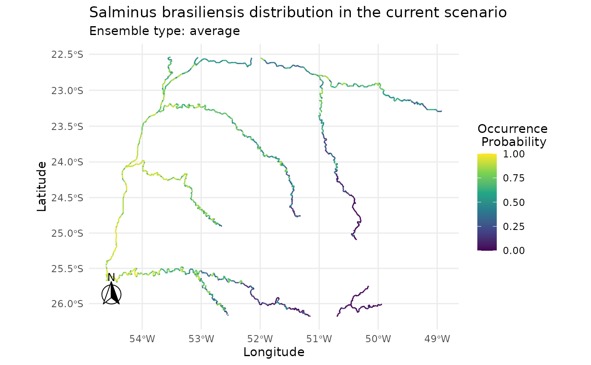

In caretSDM we always use one central object through out the
framework, the input_sdm object. This allows us to
concatenate functions, which can be very useful when running SDMs for
the first couple of times. Here we provide a functioning way to easily
run your framework with only three objects.
# Build sdm_area object
sa <- sdm_area(rivs,
cell_size = 25000,
crs = 6933,
gdal = T,
lines_as_sdm_area = TRUE) |>
add_predictors(bioc) |>
add_scenarios() |>
select_predictors(c("LENGTH_KM", "DIST_DN_KM","bio1", "bio4", "bio12"))
#> ! Making grid over study area is an expensive task. Please, be patient!
#> ℹ Using GDAL to make the grid and resample the variables.
#> Linking to GEOS 3.12.1, GDAL 3.8.4, PROJ 9.4.0; sf_use_s2() is TRUE
#>
#> ! Making grid over the study area is an expensive task. Please, be patient!
#> ℹ Using GDAL to make the grid and resample the variables.
# Build occurrences_sdm object
oc <- occurrences_sdm(salm, crs = 6933) |>
join_area(sa)
# Merge sdm_area and occurrences_sdm and perform pre-processing, processing and projecting.
i <- input_sdm(oc, sa) |>
data_clean() |>
vif_predictors() |>
pseudoabsences(method = "bioclim", variables_selected = "vif") |>
train_sdm(algo = c("naive_bayes", "kknn"),
crtl = caret::trainControl(method = "repeatedcv",
number = 4,
repeats = 1,
classProbs = TRUE,
returnResamp = "all",
summaryFunction = summary_sdm,
savePredictions = "all"),
variables_selected = "vif") |>
predict_sdm(th = 0.7) |>
suppressWarnings()
#> Cell_ids identified, removing duplicated cell_id.
#> Testing country capitals
#> Removed 0 records.
#> Testing country centroids
#> Removed 0 records.
#> Testing duplicates
#> Removed 0 records.
#> Testing equal lat/lon
#> Removed 0 records.
#> Testing biodiversity institutions
#> Removed 0 records.
#> Testing coordinate validity
#> Removed 0 records.
#> Testing sea coordinates
#> Removed 0 records.
#> Loading required package: ggplot2
#> Loading required package: lattice
#>
#> Attaching package: 'caret'
#>
#> The following object is masked from 'package:caretSDM':
#>
#> predictors
i
#> caretSDM
#> ...............................
#> Class : input_sdm
#> -------- Occurrences --------
#> Species Names : Salminus brasiliensis
#> Number of presences : 22
#> Pseudoabsence methods :
#> Method to obtain PAs : bioclim
#> Number of PA sets : 10
#> Number of PAs in each set : 22
#> Data Cleaning : NAs, Capitals, Centroids, Geographically Duplicated, Identical Lat/Long, Institutions, Invalid, Non-terrestrial, Duplicated Cell (grid)
#> -------- Predictors ---------
#> Number of Predictors : 5
#> Predictors Names : LENGTH_KM, DIST_DN_KM, bio1, bio4, bio12
#> Area (VIF) : all
#> Threshold : 0.5
#> Selected Variables (VIF) : LENGTH_KM, DIST_DN_KM, bio1
#> --------- Scenarios ---------
#> Number of Scenarios : 1
#> Scenarios Names : current
#> ----------- Models ----------
#> Algorithms Names : naive_bayes kknn
#> Variables Names : LENGTH_KM DIST_DN_KM bio1
#> Model Validation :
#> Method : repeatedcv
#> Number : 4
#> Metrics :
#> $`Salminus brasiliensis`
#> algo ROC TSS Sensitivity Specificity
#> 1 kknn 0.7793611 0.4883333 0.755 0.7425
#> 2 naive_bayes 0.7883889 0.4408333 0.745 0.7142
#>
#> -------- Predictions --------
#> Ensembles :
#> Scenarios : current
#> Methods : mean_occ_prob wmean_AUC committee_avg
#> Thresholds :
#> Method : threshold
#> Criteria : 0.7
plot(i)